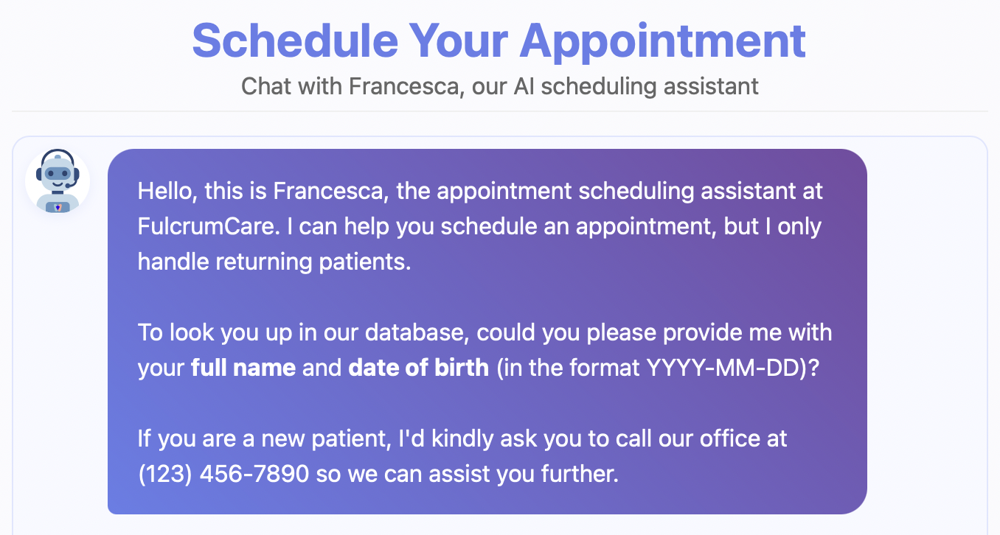
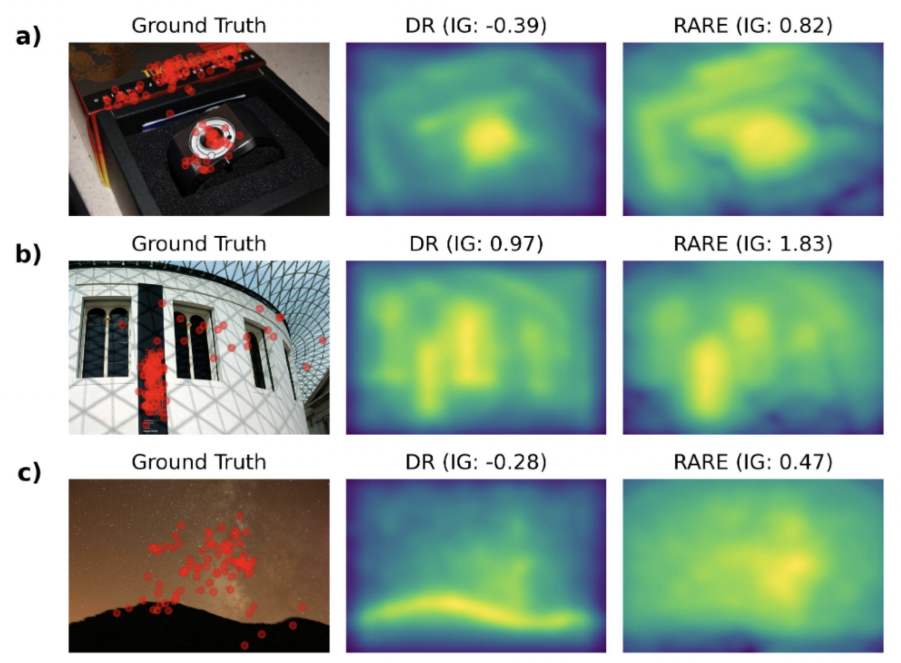
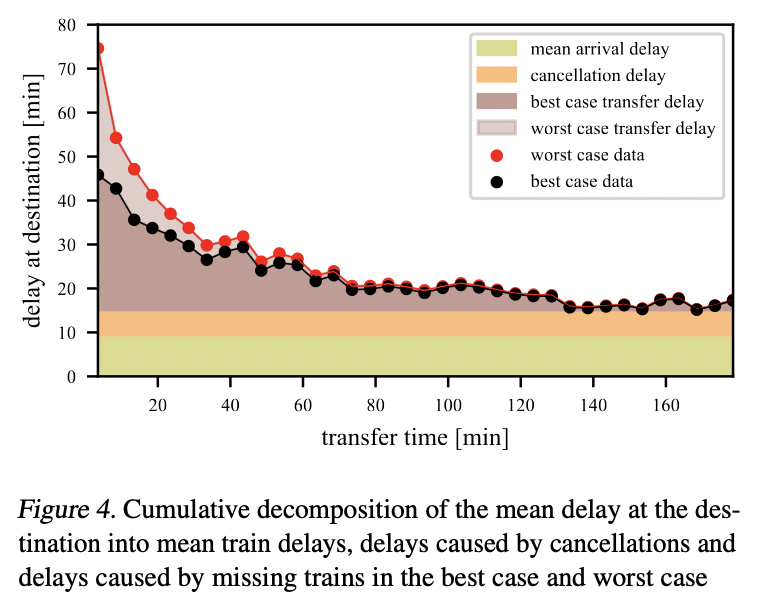

Machine Learning & Neuroscience Researcher
Passionate about understanding artificial and biological intelligent systems, and applying this knowledge to make AI safe for society.
Bridging theory and practice in machine learning research
I am a dedicated machine learning researcher with a strong foundation in both theoretical and applied aspects of AI. My research interests lie at the intersection of interpretability, AI safety, and neuroscience, with a particular focus on understanding how large language models (LLMs) and foundation models can be aligned with human values and cognition.
Currently, I am pursuing my Master of Science in Machine Learning at the University of Tübingen, where I am also involved in cutting-edge research projects at the ELLIS Institute and the Max Planck Institute for Intelligent Systems. My work aims to develop principled benchmarks for AI safety and to explore the neural underpinnings of intelligence through the lens of modern machine learning techniques.
When I'm not immersed in research, I enjoy long-distance running, hiking, and the game of Go.
Thesis: "How Neural is a Neural Foundation Model"
Advisors: Prof. Steven Zucker, Prof. Luciano Dyballa, Prof. Martin Butz, Prof. Matthias Bethge | GPA: 4.0/4.0
Thesis: Using Epistemic Uncertainty as Intrinsic Reward for Exploration to Efficiently Learn Affordances for Action Planning
Advisor: Prof. Martin Butz | GPA: 3.93/4.0
Advancing the frontiers of machine learning
Foundation models have shown remarkable success in fitting biological visual systems; however, their black-box nature inherently limits their utility for understanding brain function. Here, we peek inside a SOTA foundation model of neural activity (Wang et al., 2025) as a physiologist might, characterizing each `neuron' based on its temporal response properties to parametric stimuli. We analyze how different stimuli are represented in neural activity space by building decoding manifolds, and we analyze how different neurons are represented in stimulus-response space by building neural encoding manifolds. We find that the different processing stages of the model (i.e., the feedforward encoder, recurrent, and readout modules) each exhibit qualitatively different representational structures in these manifolds. The recurrent module shows a jump in capabilities over the encoder module by 'pushing apart' the representations of different temporal stimulus patterns; while the readout module achieves biological fidelity by using numerous specialized feature maps rather than biologically plausible mechanisms. Overall, we present this work as a study of the inner workings of a prominent neural foundation model, gaining insights into the biological relevance of its internals through the novel analysis of its neurons' joint temporal response patterns.
While Explainable AI (XAI) aims to make AI understandable and useful to humans, it has been criticised for relying too much on formalism and solutionism, focusing more on mathematical soundness than user needs. We propose an alternative to this bottom-up approach inspired by design thinking: the XAI research community should adopt a top-down, user-focused perspective to ensure user relevance. We illustrate this with a relatively young subfield of XAI, Training Data Attribution (TDA). With the surge in TDA research and growing competition, the field risks repeating the same patterns of solutionism. We conducted a needfinding study with a diverse group of AI practitioners to identify potential user needs related to TDA. Through interviews (N=10) and a systematic survey (N=31), we uncovered new TDA tasks that are currently largely overlooked. We invite the TDA and XAI communities to consider these novel tasks and improve the user relevance of their research outcomes.
Infants learn actively in their environments, shaping their own learning curricula. They learn about their environments' affordances, that is, how local circumstances determine how their behavior can affect the environment. Here we model this type of behavior by means of a deep learning architecture. The architecture mediates between global cognitive map exploration and local affordance learning. Inference processes actively move the simulated agent towards regions where they expect affordance-related knowledge gain. We contrast three measures of uncertainty to guide this exploration: predicted uncertainty of a model, standard deviation between the means of several models (SD), and the Jensen-Shannon Divergence (JSD) between several models. We show that the first measure gets fooled by aleatoric uncertainty inherent in the environment, while the two other measures focus learning on epistemic uncertainty. JSD exhibits the most balanced exploration strategy. From a computational perspective, our model suggests three key ingredients for coordinating the active generation of learning curricula: (1) Navigation behavior needs to be coordinated with local motor behavior for enabling active affordance learning. (2) Affordances need to be encoded locally for acquiring generalized knowledge. (3) Effective active affordance learning mechanisms should use density comparison techniques for estimating expected knowledge gain. Future work may seek collaborations with developmental psychology to model active play in children in more realistic scenarios.
Bridging research and practical applications

A conversational AI chatbot designed to assist patients in scheduling dental appointments, providing information about services, and answering frequently asked questions. In progress work, MVP is publicly available. Closed-source productization and deployment in progress.

DeepRARE (Mancas, Kong, and Gosselin 2020) is a compelling approach to visual saliency prediction. It combines the traditional idea of low-level pop-out with modern high-level deep features. DeepRARE assumes high saliency for rare VGG16 (Simonyan and Zisserman 2015) features within an image without needing saliency supervision. This paper evaluates DeepRARE on the MIT/Tuebingen Saliency Benchmark (Kümmerer, Bylinskii, et al. n.d.) using the principled information gain metric and conducts a detailed error case inspection. Error case analysis reveals that human faces and text are insufficiently attended to. Adding face and text detectors improves model performance suggesting potential improvements of DeepRARE by using stronger pre-trained features. DeepRARE performs at least 15% better than low-level saliency models, but still 60% short of state-of-the-art models.

Course project for "Data Literacy" at University of Tübingen.
Building expertise across academia and industry
Principled AI Safety Benchmarking
Full-stack development of front desk automation software tools
Training Data Attribution (TDA) research, teaching assistant for graduate-level trustworthy machine learning course
Rain forecasting benchmark creation, modeling social inference, teaching assistant for cognitive modeling
Automatic in-time detection of external influences to a robot arm
Assisted in teaching linear algebra and calculus to undergraduate students
Let's discuss research opportunities and collaborations
I'm always interested in discussing new research opportunities, potential collaborations, or simply connecting with fellow researchers and practitioners in the ML community.
johannes.bertram@yale.edu
Tübingen, BW, Germany